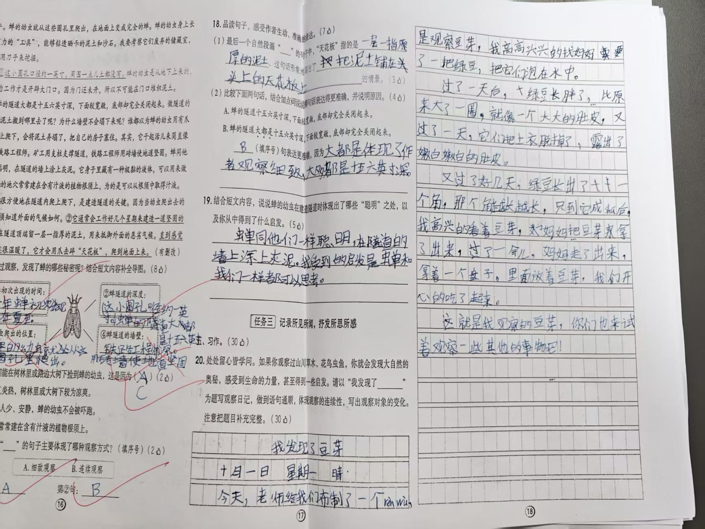

下面全部是系统真实跑出来的结果，没有手工润色。

十月一日 星期一 晴
今天，老师给我们布制了一个任务，是观察豆芽，我高高兴兴的找妈妈要了一把绿豆，把它们泡在水中。
过了一天白，大绿豆长胖了，比原来大了一圈，就像一个一个大大的肚皮，又过了一天，它们把上衣脱掉了，露出了嫩白嫩白的肚皮。
又过了好几天，绿豆长出了小个子角，那个能越长，只到它成抓后，我高兴的看着豆芽，妈妈把豆芽拿了出来，过了一会，妈妈走了出来，拿着一个盘子，里面放着豆芽，我们开心的吃了起来。
这就是我观察的豆芽，你们也来试着观察一些其他的事物吧！
30 分制；四个维度分别打分；只挑这篇作文里真实存在的问题。
十月一日 星期一 晴
今天，老师给我们布置了一个任务——观察豆芽。我高高兴兴地找妈妈要了一把绿豆，把它们泡在水中。绿豆圆滚滚的，像一群穿着绿衣服的小娃娃。我每天给它们换水，蹲在旁边看了又看。
过了一天，绿豆长胖了，比原来大了一圈，就像一个个大大的肚皮。又过了一天，它们把绿色的上衣脱掉了，露出嫩白嫩白的肚皮，可爱极了。我用手轻轻一碰，它们滑溜溜的，好像在和我打招呼。
又过了好几天，绿豆长出了小芽。那芽先露出白白的小尖，像小逗号，后来越长越长，直到长成豆芽。有的弯弯的，有的直直的，真有意思。我高兴地看着豆芽，妈妈把豆芽拿了出来。过了一会儿，她端着一个盘子走出来，盘子里放着豆芽。我们开心地吃了起来，觉得自己的豆芽特别香。
这就是我观察的豆芽。你们也来试着观察一些其他事物吧！
12 个镜头 × 5 秒，848×480，童声旁白 + 作文原句字幕 + 原创配乐。这是系统自动生成的，没有人工剪辑。
四步，全程手机操作。
一码一人，每码 3 次动画，作文不限篇。
| 序号 | 体验码 | 说明 |
|---|---|---|
| 01 | PE-WTUU-QRVB | 体验用户01 |
| 02 | PE-MNTZ-Q5QT | 体验用户02 |
| 03 | PE-9UNX-B7EH | 体验用户03 |
| 04 | PE-VLKQ-UYP6 | 体验用户04 |
| 05 | PE-XZRK-RP3U | 体验用户05 |
| 06 | PE-RT4T-8GHE | 体验用户06 |
| 07 | PE-CSE3-3U57 | 体验用户07 |
| 08 | PE-PNZD-WTH4 | 体验用户08 |
| 09 | PE-CY8S-XHGS | 体验用户09 |
| 10 | PE-VAL6-ZGJ7 | 体验用户10 |